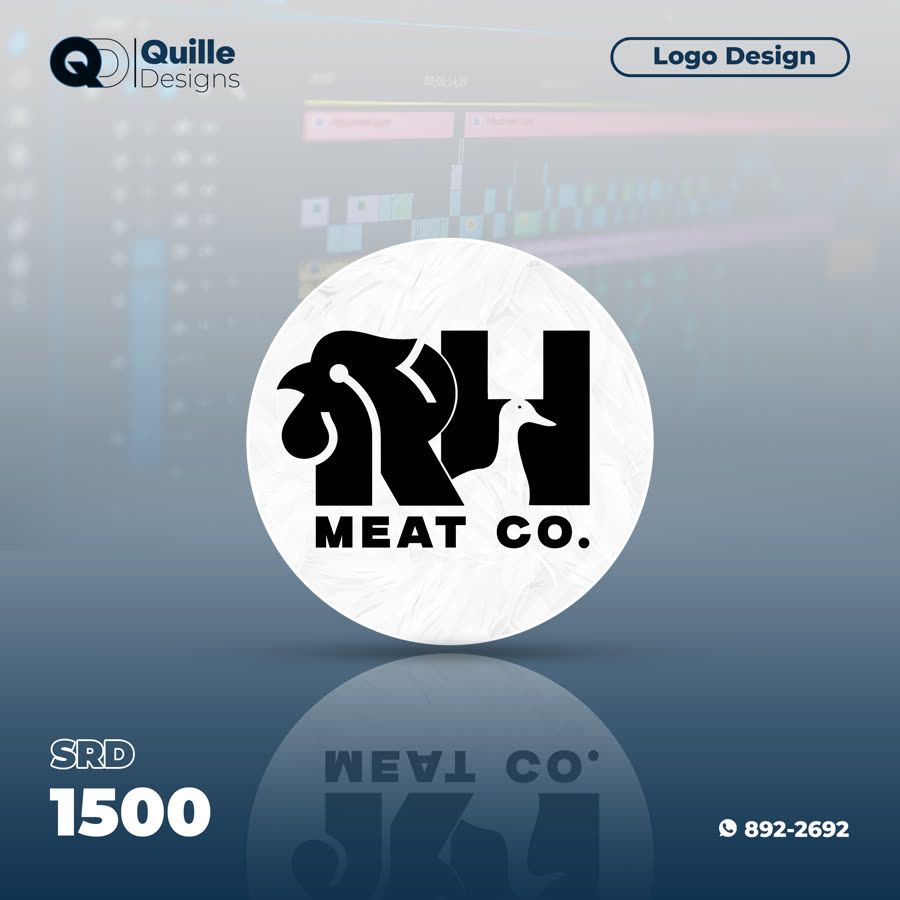
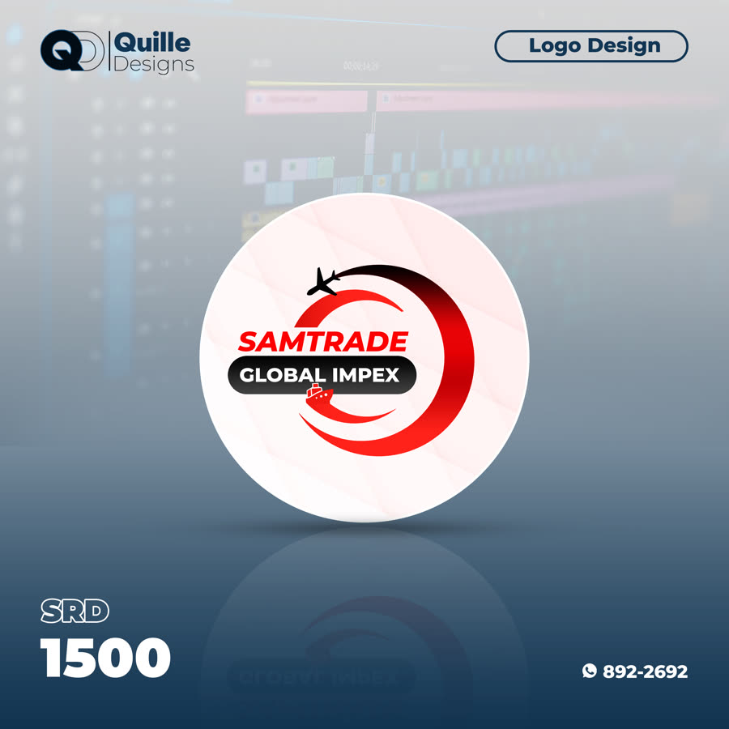
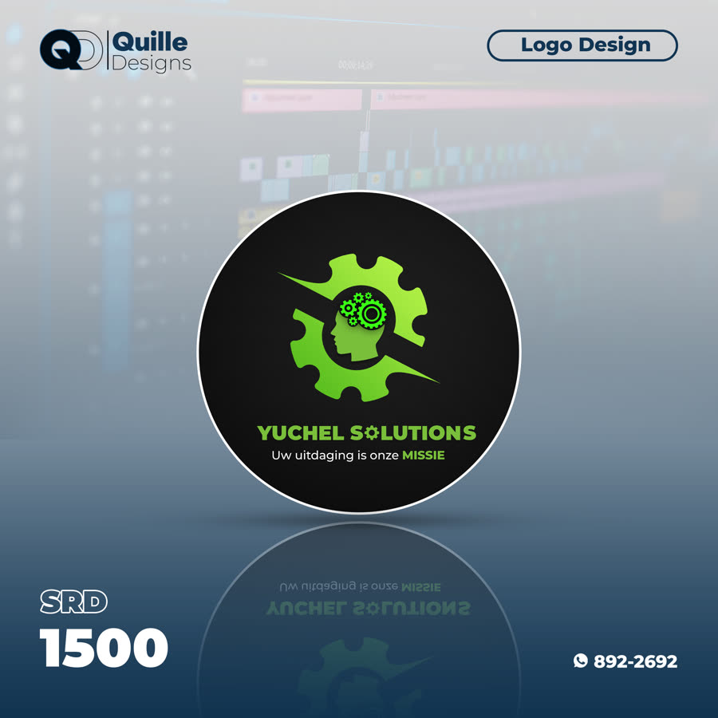
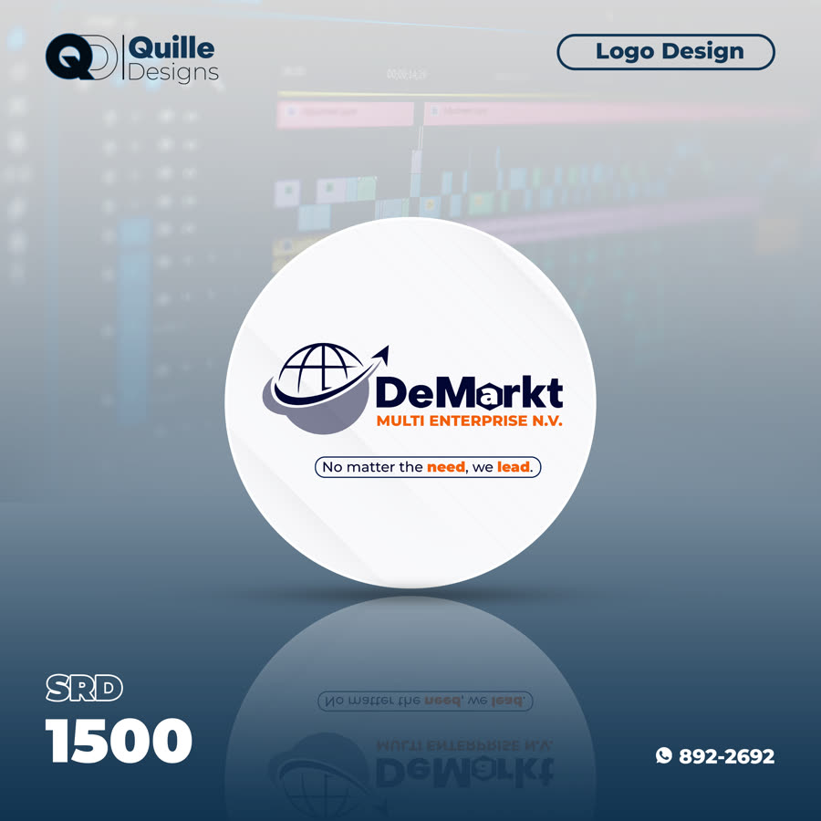
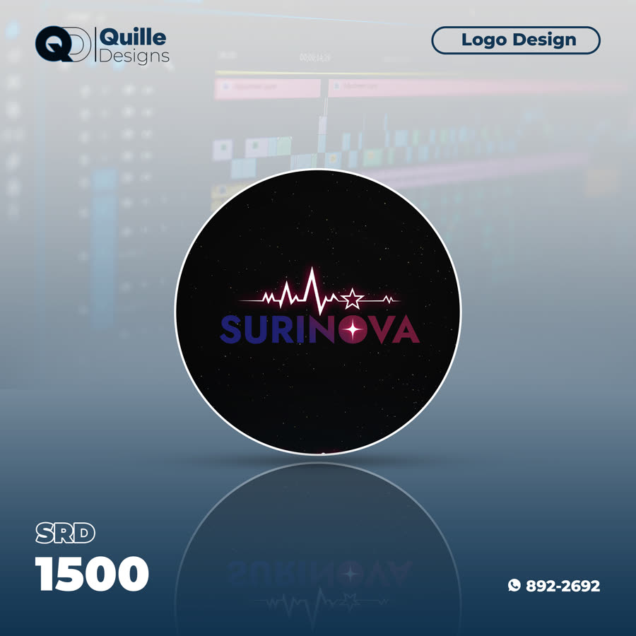
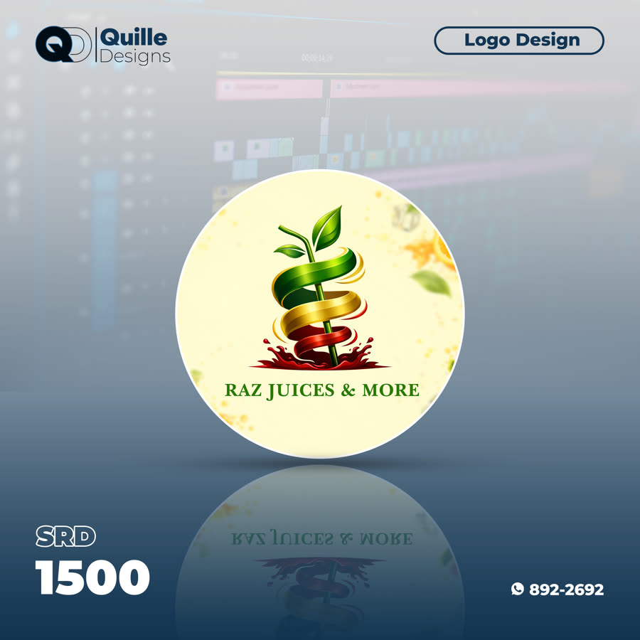
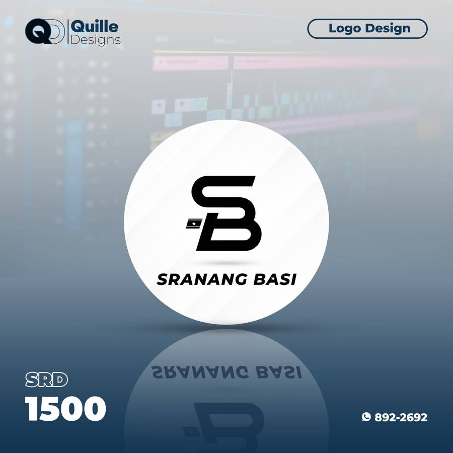
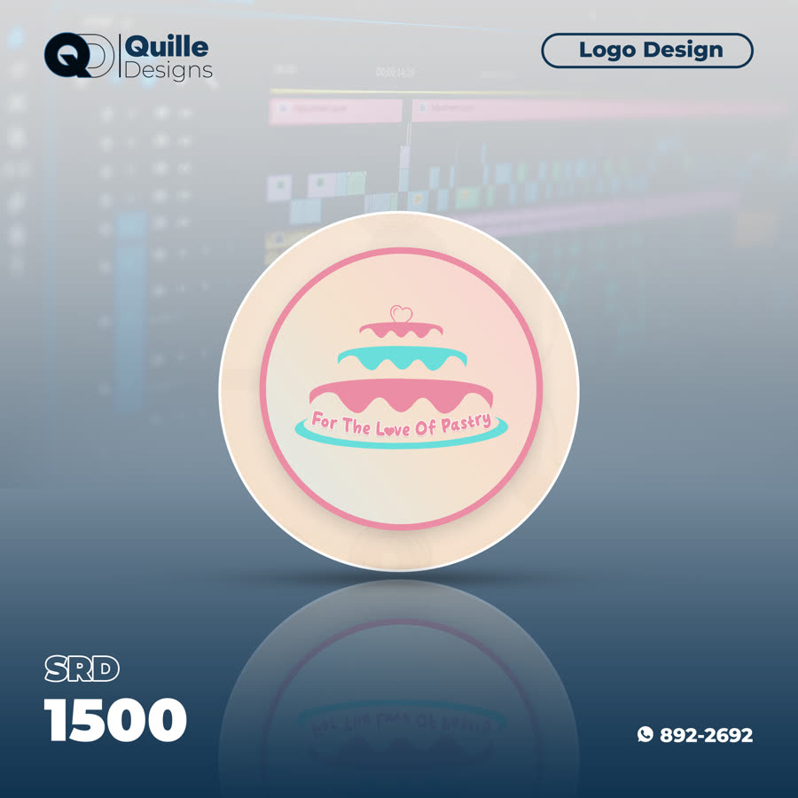

Fake Alexa
Korte comedy/content video, geproduceerd en gemonteerd voor social media.
Tools: iPhone 17 Pro Max · CapCut · Premiere Pro
Portfolio
Een selectie van content en video's die ik heb geproduceerd — gericht op storytelling, montage en merkbeleving.
Korte comedy/content video, geproduceerd en gemonteerd voor social media.
Tools: iPhone 17 Pro Max · CapCut · Premiere Pro
Video content voor SmartWigi in Brokopondo, gericht op merkzichtbaarheid.
Tools: iPhone 17 Pro Max · CapCut · Premiere Pro
Verhalende content video, gemaakt voor social media publiek.
Tools: iPhone 17 Pro Max · CapCut · Premiere Pro
Korte comedy/skit video geproduceerd voor social media.
Tools: iPhone 17 Pro Max · CapCut · Premiere Pro

Logo voor een vleesverwerkend bedrijf, met een herkenbaar dierenmotief.
Tools: Adobe Photoshop

Logo voor een import/export bedrijf, met een dynamisch wereldwijd motief.
Tools: Adobe Photoshop

Logo voor een consultancybedrijf, met een tandwiel-en-hoofd motief.
Tools: Adobe Photoshop

Logo voor een multi-enterprise bedrijf, met een wereldbol-en-pijl motief.
Tools: Adobe Photoshop

Logo met een moderne, sterrenhemel-geïnspireerde stijl.
Tools: Adobe Photoshop

Logo voor een sappenmerk, met een fris plant-en-lint motief.
Tools: Adobe Photoshop

Logo voor een lokaal merk, met een strak monogram.
Tools: Adobe Photoshop

Logo voor een banketbakkerij, met een speelse taart-illustratie.
Tools: Adobe Photoshop